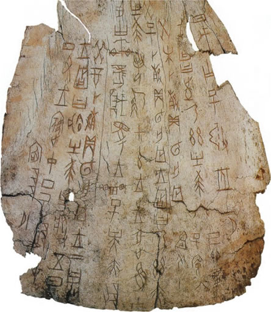
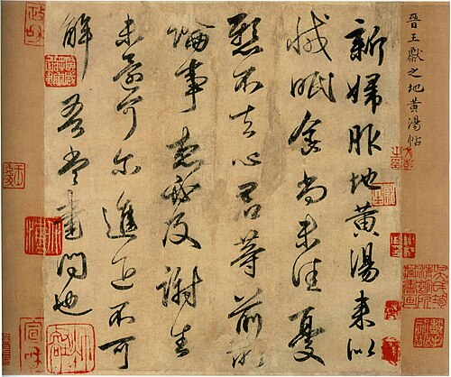
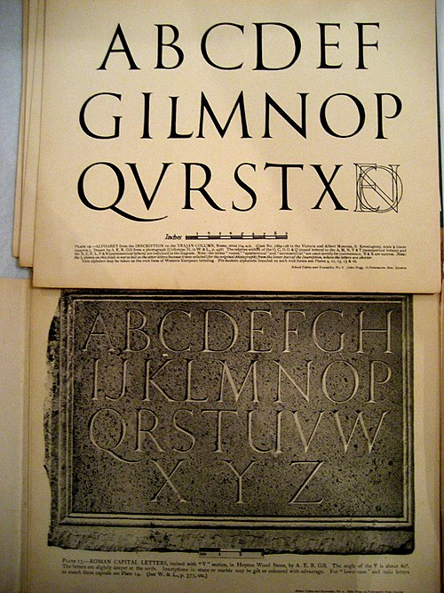
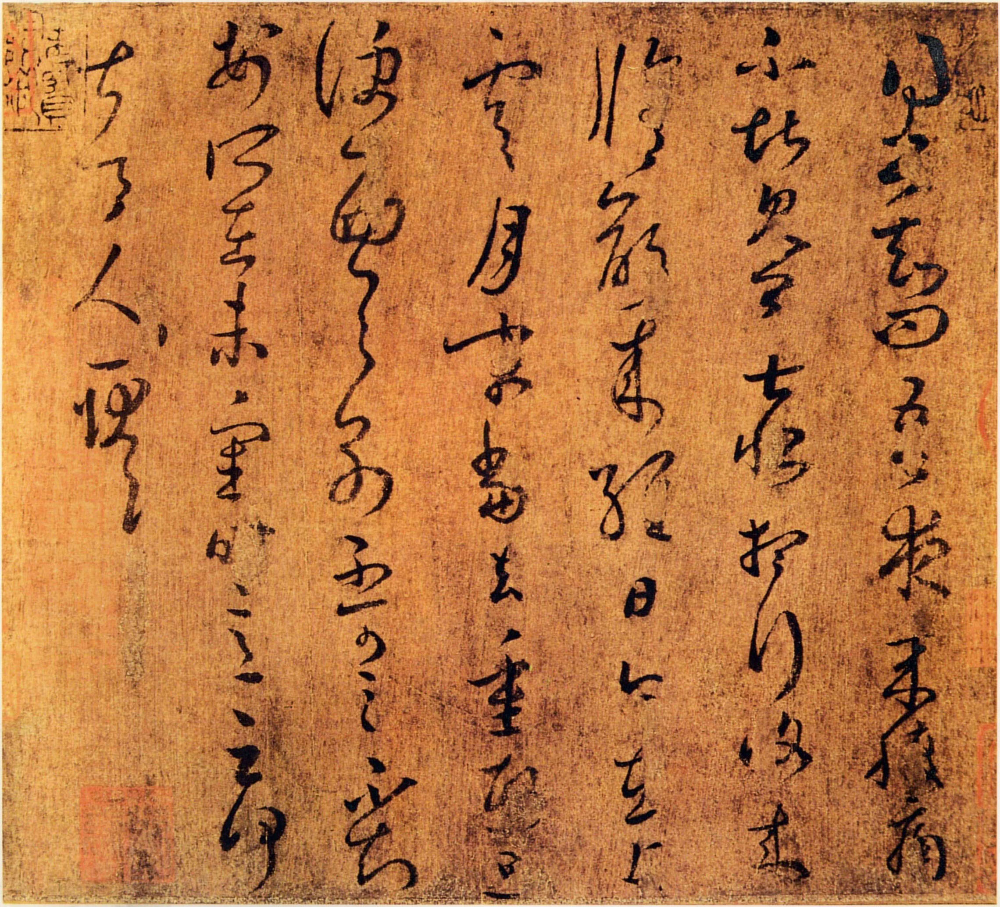
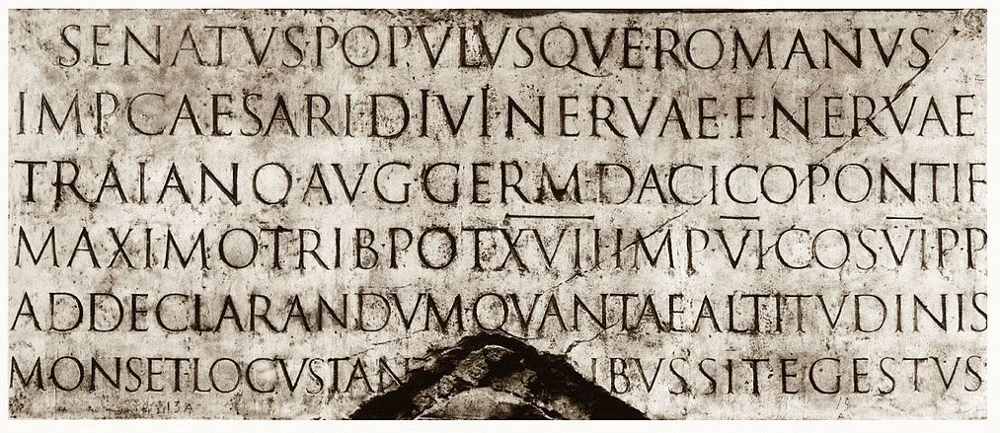
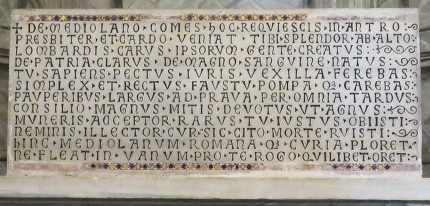
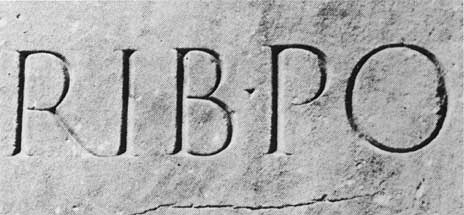

c. 1250 - 1050 BCE
China: Oracle Bone Script (Shang)
Hard bone/shell surfaces resist curves, encouraging angular strokes, careful planning, and stable structure.

In this project I will explores the physical act of writing shaped early letterforms. In China, characters moved from angular carved marks to rhythmic brush strokes. In Rome, brush-designed capitals were stabilized through chisel carving into stone, creating monumentality, proportion, and the typographic logic of the serif.
Thesis question: How did carving in stone in Rome and brush writing in early China shape the structural logic, visual rhythm, and typographic evolution of their writing systems between 1250 BCE and 300 CE?
Each mark on paper holds traces of the tool that shaped it. Though many view writing simply as a way to capture speech, its forms tell another story. Pressure leaves evidence - visible in curves and angles alike. Movement across surfaces guides how letters take form. Resistance from page or stylus alters each stroke subtly. Long before printed type appeared, handwriting emerged through touch. Body, instrument, and material worked together in rhythm. Shape follows function, but also history, habit, effort.
This work looks into how making marks by hand guided the form of ancient Chinese and Roman letters. Instead of concentrating solely on symbols or language shifts, it explores how instruments like brushes or chisels affected shape, flow, balance, and durability. Through contrasting carved oracle bones and inked strokes in early China against painted and cut inscriptions in Rome, a pattern emerges: scripts change not just because people need to talk, but due to material pushback and human choices behind them.
From the start, ancient Chinese script appeared as marks cut into shells and bones used in sacred forecasts. Following that came brushes dipped in ink, moving across fabric and fiber sheets instead. A softer base allowed letters to flow more freely than before. This change brought motion into form, altering how symbols were built inside. Expression shifted toward pulse, timing, shape - driven by hand speed and pressure.
In ancient Rome, writing took shape as a tool of public life and power. Through letters, laws stood, buildings rose, imperium spoke. Even if begun with fluid strokes of a brush, these forms found their lasting form carved into stone. The sharp chisel shaped each line - clarity mattered, balance ruled, endurance defined it. Movement gave way to stillness; measured spacing became key.
This project questions - through the juxtaposition of such systems:
How much does handwriting influence the shape of letters?
Writing shifts when the surface gives way beneath it. Tools don't just affect form - they build rules into letters. Where resistance appears, shapes grow fixed. Flow emerges only if the ground allows. Seen here, Roman uppercase forms and Chinese script are not merely symbols of tradition. They reveal how physical limits guide what we see. The body moves, the mark follows - material reality steers design.
Each section includes large images of writing, detailed captions, and (when possible) translation notes. Use these four chapters as your main navigation and grading “checklist.”

How bone and shell encouraged angular, planned marks and stable internal structure.
Read section →
How pressure, speed, and stroke sequence create expressive variation and visual energy.
Read section →
Brush-designed forms carved into stone: geometry, proportion, and the “public voice” of empire.
Read section →
A tool-based reading of how gesture becomes visible (China) or stabilized (Rome).
Read section →Oracle bone inscriptions from the Shang Dynasty show how a hard surface changes letterform behavior: curves resist, angles survive, and every stroke must be planned before it is cut.
Late in the Shang era, around 1250 to 1050 BCE, written signs did not begin as tools for stories or daily notes rather, they emerged through sacred need. Used by rulers seeking guidance, oracle bones played a role in structured rituals meant to reach ancestral voices and unseen powers. Whenever choices loomed over battles, planting seasons, storms, births, or sickness, the monarch turned toward divine insight. Queries found their way onto turtle undershells or shoulder blades of cattle before flames touched them just enough to cause splits. From these fractures, meaning took shape - an omen drawn from split lines - and often, someone wrote that reading next to what had been asked.
Stone resisted quick marks, shaping letters through deliberate effort. Since chisels lacked the flow of ink, each line demanded careful thought before taking shape. Angles replaced smooth turns, giving symbols a rigid but balanced stance. Marks stood fixed, made to last without chance for change. Every character carried weight, formed by purpose rather than impulse. What mattered most was not personal voice, yet assurance - that leaders consulted higher forces. Through such marks on bone, ancient scripts show how writing began in ceremony, authority, under pressure to keep holy dialogue alive through changing years.

When the surface becomes absorbent (silk/paper) and the tool becomes flexible (brush), writing shifts from incised structure to performed movement - pressure, speed, and direction become visible.
Brush writing changes what a “stroke” can do. Instead of one uniform cut, the line can swell or taper depending on pressure. A single stroke can begin thin, press into thickness, then lift into a sharp finish. This makes rhythm possible: characters can feel calm, energetic, dense, or airy based on stroke tempo and the balance of negative space.
Brush writing also strengthens stroke logic: characters are read as sequences of moves, not just final outlines. In other words, the character is a choreography. Even when different writers produce slightly different forms, the underlying structure remains legible because it is built from consistent directional strokes.

Roman capital letters became a public technology: designed for distance, carved for endurance, and aligned with architecture. Brush design is present - but stone makes it permanent.
Standing tall in open spaces, writing shaped how power showed itself through the later years of the Republic and into imperial times. Carved deep into arches, temple walls, and memorials, Roman capitals reached eyes from afar rather than sitting quietly on personal pages. Victories found voice there, leaders gained tribute, legal rules took fixed form - each line bolstering state control. It did not sit apart; instead, letterforms rose like structures themselves. Matching marble columns and broad stone surfaces, script demanded equal presence, fitting for an empire that built meaning into its very ground.
How the shape evolved becomes clear through this method. Using brushes at first, letterforms gained balance and flow. Yet when carved into rock, fluid gestures turned fixed and firm. Hard material does not accept gentle curves easily. Too narrow a stroke might fracture under time's pressure. Uneven gaps between characters could make the whole layout seem unsteady on architecture. So came the shift - Roman capitals began favoring clean geometry, measured ratios, space distributed without gaps. A hidden square holds each character steady, aligning them into quiet order along the front.
A lingering trace of that shift may live on in the serif. Carved in stone, the soft spread of a brush's mark turns rigid, fixed at its edges. What once flowed freely now holds still, shaped by hand and time.
Endurance shaped how Romans carved their letters. Brush marks show a person's touch; stone carving hides it. Stability appears in those rigid forms, order built into each line. Authority speaks through symmetry, even after empires fade. Lasting power lives in the design itself.

Chinese brush writing preserves gesture and rhythm, while Roman carving suppresses motion to achieve permanence and public authority. Both begin with drawing - but only one keeps it “alive.”
Pressure changes shape meaning when ink meets paper in Chinese practice. Where stone holds a letter still, the brush lets it breathe through speed and weight. A chisel answers hardness with precision, layering silence over action step by slow step. Each stroke either fades like memory or stands fixed beneath measured eyes. Time flows inside one kind of mark - another arrests that flow without apology. The hand's journey matters more than its arrival in fluid scripts. Hard surfaces invite control, soft ones welcome surprise. Motion lives differently depending on what resists it along the way.
A mark made by hand stays clear within each finished symbol in Chinese calligraphy. As the brush moves, changes in force show up plainly, while tempo imprints subtle signs - slowness or rush alike. Instead of fixed forms, regular styles keep flexibility using differences between thick and thin lines, along with spatial poise inside the frame. What appears is more than an outline; it unfolds like motions caught across moments.
Starting with stone, Roman capitals obey a distinct physical rule. Even if drawn first by brush, their shape takes fixed form when carved - chisels allow little change once begun. Each cut moves away from gesture, toward precision that lasts. What remains shows no trace of personal touch; what matters is balance, measured gaps, clean lines, how forms stand together like parts of a building. Shape turns into support.
A focused timeline (1250 BCE - 300 CE) that supports the thesis without stretching across unnecessary centuries.


